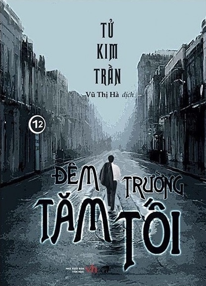

REVIEW SÁCH
Đêm Trường Tăm Tối
Nhận xét của mình
Đây là một tiểu thuyết trinh thám hình sự trung quốc, thường thì những cuốn trinh thám trung mà mình đọc đều liên quan nhiều tới cảnh sát hình sự. Cuốn này thực sự khiến mình suy ngẫm rất nhiều về xã hội cũng như là con người. Trước hết về cốt truyện, mở đầu bằng một phân cảnh khó hiểu khi một người giảng viên đại học xách một cái vali chứa xác của một người đàn ông và bị phát hiện ở ga tàu, nhưng anh ta lại có chứng cứ ngoại phạm không phạm tội. Sự việc này đã khiến cho cảnh sát phải lục lại quá khứ và người đọc được nhập vào góc nhìn của một anh cảnh sát trong quá khứ. Đêm trường tăm tối đã khắc hoạ sự nguy hiểm của những người có tiền và có quyền, họ cậy quyền để làm việc ác và thâu tóm cả cảnh sát để che giấu đi những hành vi đồi truỵ của mình. Sau khi đọc xong hết cuốn truyện và gấp sách lại, mình đã ngẫm nghĩ một hồi lâu bởi câu chuyện quá sâu sắc, và khâm phục tài năng của tác giả